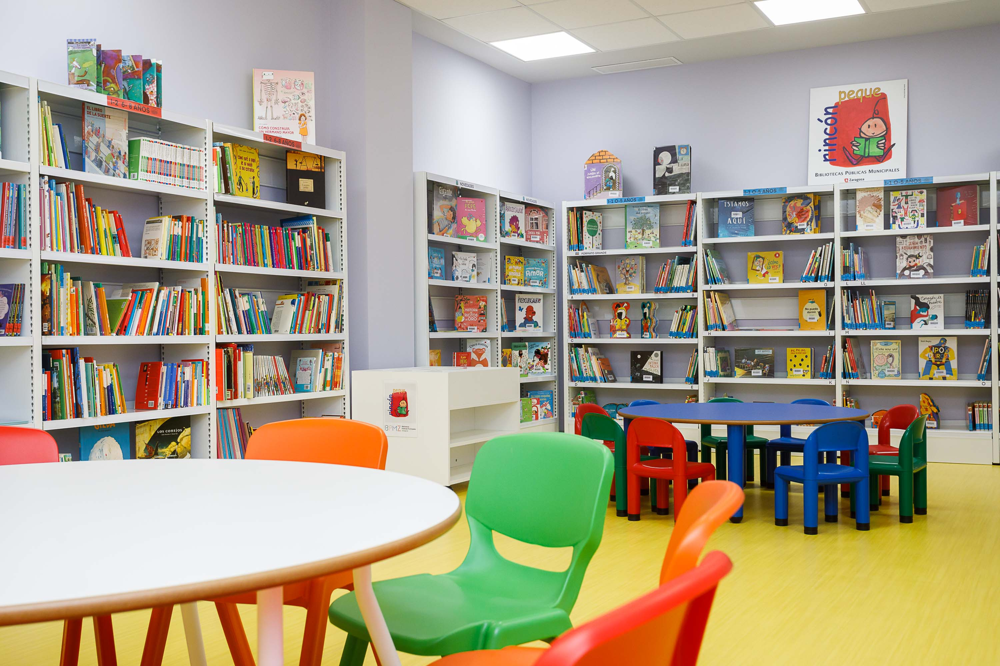

Referentes bibliograficos

Acuña, M. F. R., Chávez, R. E. M., Robles, N. M. H., Vargas, C. E. Q., y Luján, J. B. T. (2025). Efectos de los Huertos Urbanos Escolares en la Educación Ambiental y la Nutrición Infantil: Un Estudio en Instituciones Públicas De Lima Metropolitana. Ibero Ciencias-Revista Científica y Académica-ISSN 3072-7197, 4(1), 25-54.
Agudo, J. (2019). Efecto del uso del modelo instruccional 5E en el dominio de conceptos de genética molecular en los estudiantes de un curso de biología general. Pontificia Universidad Católica de Puerto Rico (Puerto Rico). https://www.proquest.com/dissertations-theses/efecto-del-uso-modelo-instruccional-em-5e-en-el/docview/2458039648/se-2
Agroorganicos. (2021). 5 MEZCLAS de SUSTRATOS para tu huerto 🍎 (Hortalizas y Germinación)🌱. [Video]. YouTube. https://www.youtube.com/watch?v=vUTrW03FJjg
Amortegui Miguel. (2025). Sembrando Vida, Huerta Escolar para el Cuidado Ambiental y la Seguridad Alimentaria. [Video]. YouTube. https://www.youtube.com/watch?v=P3QDpiAttqQ
Antena Lince UAdeO. (2025). Huertos agroecológicos escolares | Ciencia Al Instante. [Video]. YouTube. https://www.youtube.com/watch?v=Eg_D9G-0WIw
Bybee, R., Taylor, J., Gardner, A., Van Scotter, P., Powell J., Westbrook, A. y Landes A. (2006). The BSCS 5E Instructional Model: Origins and Effectiveness. Colorado Springs: BSCS. https://www.researchgate.net/publication/242363914_The_BSCS_5E_Instructional_Model_Origins_Effectiveness_and_Applications
CAFELAB COLOMBIA. (2023). Huertas | cómo involucrar las TIC en una Huerta casera. [Video]. YouTube. https://www.youtube.com/watch?v=bSwHnt1Q81Y
Calvo Ximena. (2020). Ciclo de vida de las plantas. [video]. Youtube. https://www.youtube.com/watch?v=A89xJnZCCXY
Carreon Daniel. (2020). UNIDADES DE MEDIDA Super fácil - Para principiantes. [video]. Youtube. https://www.youtube.com/watch?v=4e-dsOgOIrA
Carreon Daniel. (2017). MEDIA, MODA Y MEDIANA Super facil | Medidas de tendencia central. [video]. Youtube. https://www.youtube.com/watch?v=0DA7Wtz1ddg&t=3s
Canal Trece Colombia. (2016). ¿Conoces la Agricultura Urbana? [Video]. YouTube. https://www.youtube.com/watch?v=-hXKBuMz7Zs
Clases Particulares en Ávila. (2023). INSTRUMENTOS de MEDIDA. [video]. Youtube. https://www.youtube.com/watch?v=AdA6eZcHi0M
Capuano, V. (2011). El uso de las TIC en la enseñanza de las Ciencias Naturales. Virtualidad, Educación y Ciencia, 2(2), 79-88. DOI: https://doi.org/10.60020/1853-6530.v2.n2.335
Chipantiza-Masabanda, J. G., Bonilla-Bonilla, A. E., y Jativa-Reyes, M. F. (2021). Huertos urbanos y periurbanos horizontales-verticales para el fomento de la educación ambiental sostenible. Formación universitaria, 14(2), 165-172.
Cosas de Jardin. (2022). Huerto para Principiantes: 10 Consejos más importantes para COMENZAR desde cero. [Video]. YouTube. https://www.youtube.com/watch?v=uniGzuqH3nE
Enseña Por Colombia. (2018). Huerta Escolar | Enseña por Colombia [Video]. YouTube. https://www.youtube.com/watch?v=ybMGtsMk1_I
Hazlo Fácil en el Hogar. (2020). HUERTOS VERTICALES CON MATERIALES RECICLADOS / VERTICAL GARDEN. [Video]. YouTube. https://www.youtube.com/watch?v=MkDAgOvaKUo&t=47s
Grau, F., Bautista, C. y Cervera, M. (2018). Diseño e implementación de un cambio metodológico en el ámbito científico mediante la gamificación y el modelo de las 5E. Edutec, Revista Electrónica de Tecnología Educativa, (66), 65-78. https://doi.org/10.21556/edutec.2018.66.1187
GuerrerosPlanet. (2020). La Germinación | ¿Cómo Crece Una Planta? | Videos Educativos Para Niños. [video]. Youtube. https://www.youtube.com/watch?v=HUKkF8jVYmY
La Granja del Borrego. (2020 a). INCREIBLE HUERTO URBANO CON MATERIALES RECICLADOS - Cultivo de Tomate, Pepino, Morron y Aromáticas!. [Video]. YouTube. https://www.youtube.com/watch?v=DSmZb3g0Y_A
La Granja del Borrego. (2020 b). COMO SEMBRAR ESPINACAS EN TU HUERTA - ACLAREO Y REPICADO MUY FACIL! - LA GRANJA DEL BORREGO. [Video]. YouTube. https://www.youtube.com/watch?v=TrtijMk9lOk
La Granja del Borrego. (2020 c). GERMINA TODOS TUS VEGETALES SIN SEMILLA RAPIDO! - Huerta casera en agua [Video]. YouTube. https://www.youtube.com/watch?v=dGyb4uchngM
La Huerta de Ivan. (2020). CUIDADOS BÁSICOS del Huerto en CASA | #Quedateencasa y Cultiva #Conmigo. [Video]. YouTube. https://www.youtube.com/watch?v=gUplS_qtkmo
López, J. J. A. (2018). Apropiación de la realidad aumentada como apoyo a la enseñanza de las ciencias naturales en educación básica primaria. Revista boletín REDIPE, 7(12), 144-157. https://revista.redipe.org/index.php/1/article/view/655
López, Z. C., Aristizabal, S. S., Guerrero, S. V. A., Oviedo, G. M., Palencia, A. F. C., Rodríguez, M. D. D., ... y Gutiérrez, N. J. (2017). Actitud, conocimiento y uso de las Tecnologías de la Información y la Comunicación (TIC) para la Enseñanza de las Ciencias Naturales en las Instituciones Educativas Públicas del Municipio de Neiva: Un estudio diagnóstico. Bio-grafía, 1211-1220. DOI: https://doi.org/10.17227/bio-grafia.extra2017-7292
Ministerio de Ambiente y Desarrollo Sostenible. (2022). ¡Crea tu propia huerta en casa con materiales reciclados ♻️!. [Video]. YouTube. https://www.youtube.com/watch?v=eNqDvujqUu8&t=11s
Ministerio de Educación Nacional. (2012). Recursos Educativos Digitales Abiertos. http://www.colombiaaprende.edu.co/html/home/1592/articles-313597_reda.pdf
Navarro González, J., y Triviño Enciso, H. Y. (2024). El cultivo de la sostenibilidad: Análisis del impacto de las huertas escolares en la conciencia ambiental y la adopción de prácticas sostenibles en estudiantes de educación básica primaria.
Pineda, M. (2018). Uso de recursos educativos digitales y aprendizaje autónomo de estudiantes universitarios en un contexto de educación virtual. https://bibliotecadigital.udea.edu.co/bitstream/10495/12045/1/PinedaMaria_2018_UsoRecursosEducativos.pdf
Pinto, M., Gomez, C., y Fernández, A. (2012). Los recursos educativos electrónicos: perspectivas y herramientas de evaluación. Perspectivas em Ciência da Informação, 17(3), 82-99. DOI: https://doi.org/10.1590/S141399362012000300007
Planeta Jardín. (2021). 7 CLAVES Del ÉXITO para CULTIVAR TOMATES 🍅en MACETA | Cómo CUIDAR Planta de Jitomate o Tomate. [Video]. YouTube. https://www.youtube.com/watch?v=SR4zm0s1Ncg
Programa de Innovación Educativa Aldea A y Aldea B. (2025). Ecohuerto: Proyecto de Educación Ambiental sobre Huertos Escolares Ecológicos. [Video]. YouTube. https://www.youtube.com/watch?v=Eg_D9G-0WIw
Ramírez, G. A., y Rey, L. S. (2022). Ambientalmente saludables: guía alimentaria que orienta dietas saludables como aporte positivo a la huella ecológica a partir de prácticas de agricultura urbana y consumo de insectos. Un estudio de caso con estudiantes del grado octavo de la IED Jorge Gaitán Cortés.
Ramirez Kevin. (2020). Aprende Lo Mas BASICO DE EXCEL En 10 MINUTOS. [video]. Youtube. https://www.youtube.com/watch?v=pDwZV7V7ECM
Restrepo Rivera Jairo. (2020 a). CÓMO PREPARAR SUSTRATO PARA HORTALIZAS | Jairo Restrepo Rivera. [Video]. YouTube. https://www.youtube.com/watch?v=SCNVBYJcCBY&t=428s
Restrepo Rivera Jairo. (2020 b). BIOFERTILIZANTES Y OTROS BIO-PREPARADOS ¡Nuevo Módulo! | Jairo Restrepo Rivera. [Video]. YouTube. https://www.youtube.com/watch?v=mIJGjdwj7Tk
Rache-Zubieta, Q. A. (2023). Diseño e implementación de huerta vertical como estrategia de Educación Ambiental en la Institución Educativa Escuela Normal Superior Santiago de Tunja.
Saber Programar. (2014). Crear GRÁFICOS estadísticos. Introducir datos en Excel y crear gráficas. [Video]. YouTube. https://www.youtube.com/watch?v=04pGYGNxRZY
Silva, F. A. V., y Campos, P. A. C. (2023). Proyectos pedagógicos productivos para la educación rural. Revista Facultad de Ciencias Contables Económicas y Administrativas-FACCEA, 13(2), 05-24.
TvAgro. (2023). Agroecología y agricultura orgánica - TvAgro por Juan Gonzalo Angel Restrepo. [Video]. YouTube. https://www.youtube.com/watch?v=wdNcljXs7BI
WissenSync. (2016). Media, Mediana y Moda en Excel | Medidas de tendencia central [Vídeo]. YouTube. https://www.youtube.com/watch?v=FjtzACMXuL0
Vázquez, H. (2020). Modelo instruccional idea. Una propuesta para el diseño de programas formativos en línea. Revista Boletín Redipe, 9(8), 204-220. https://doi.org/10.36260/rbr.v9i8.1054